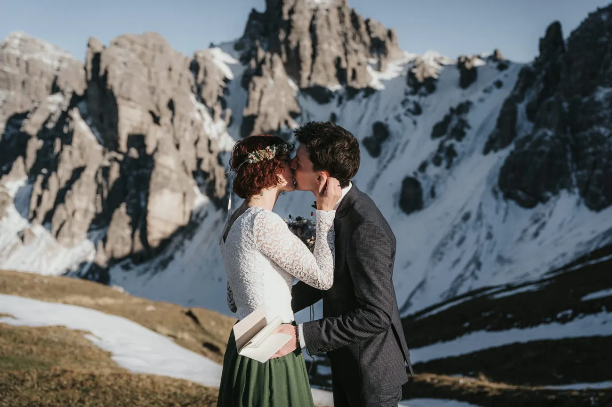
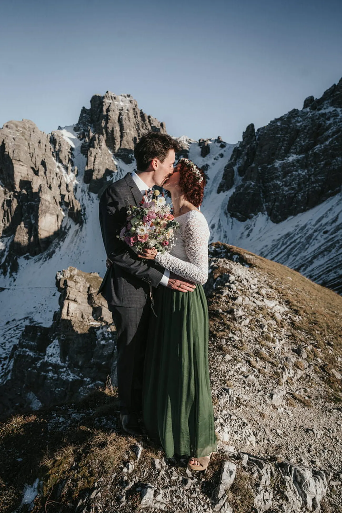
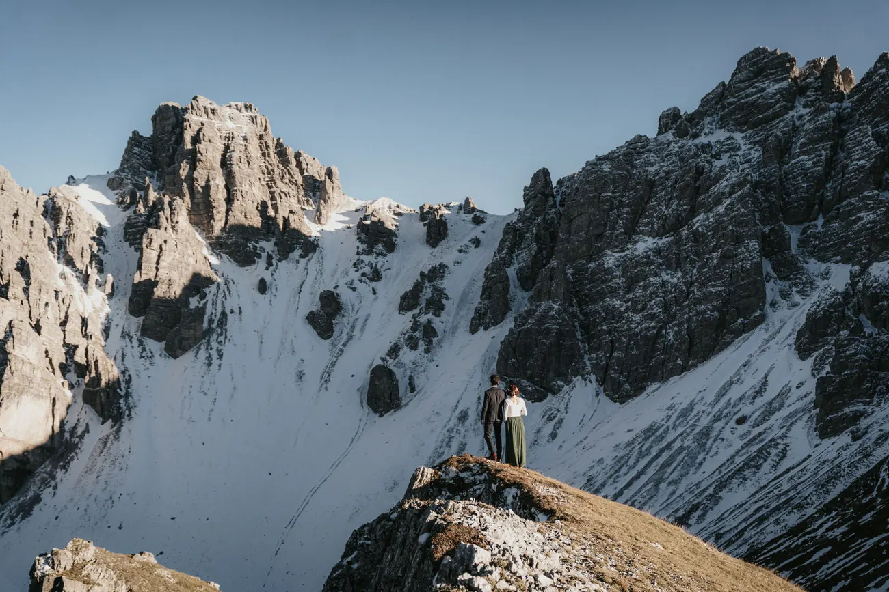
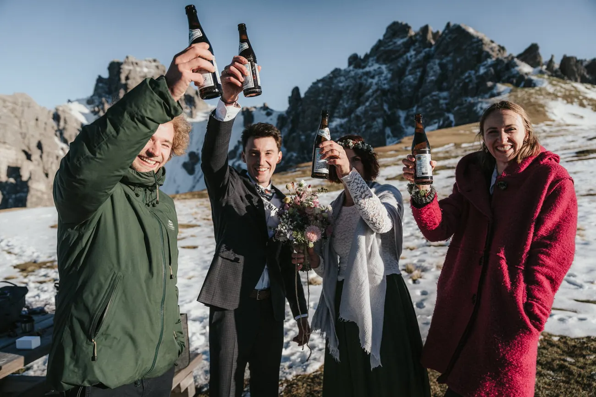
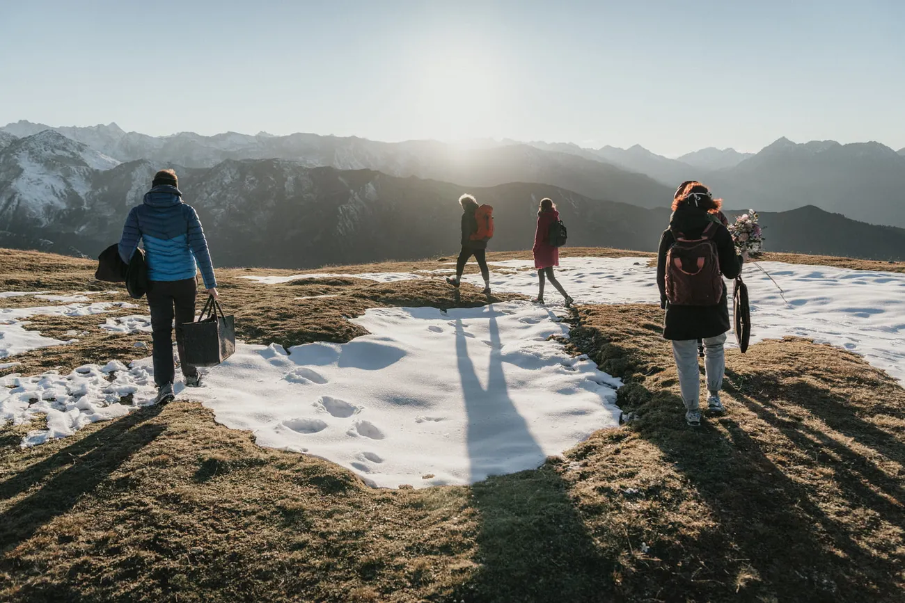
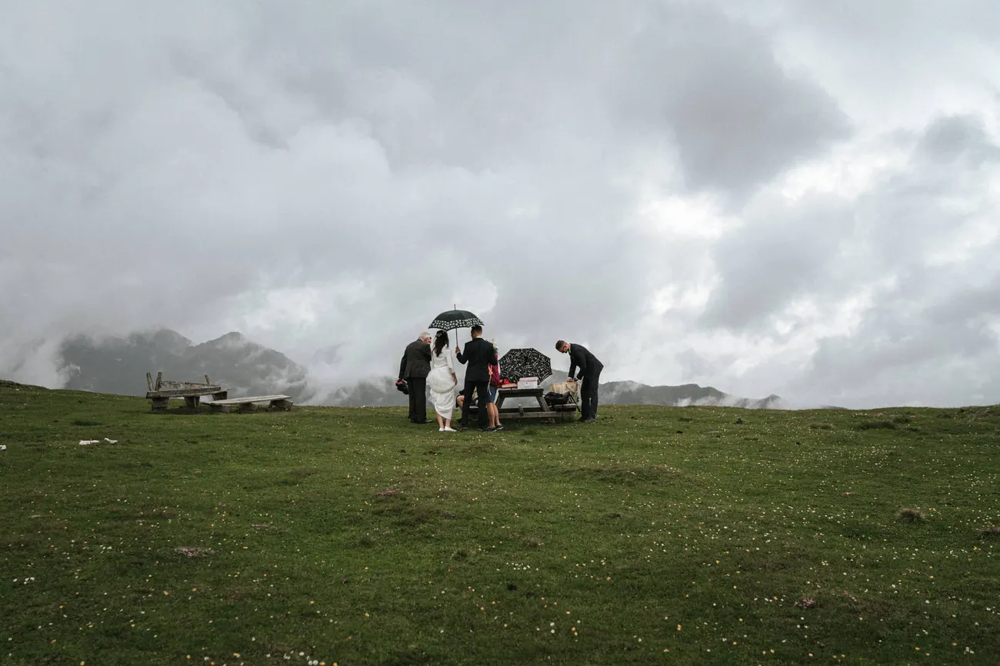
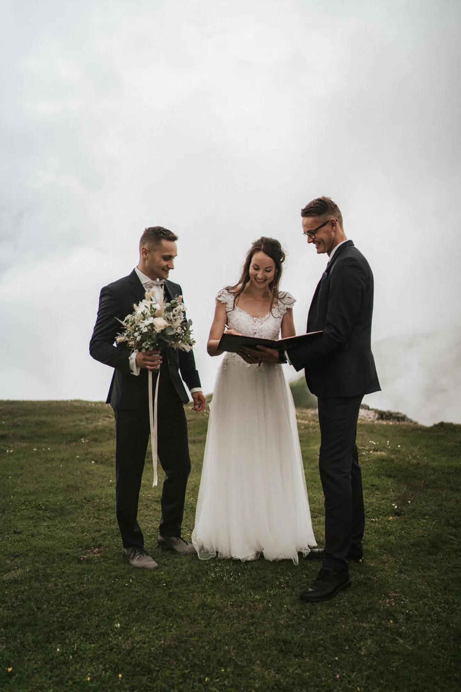
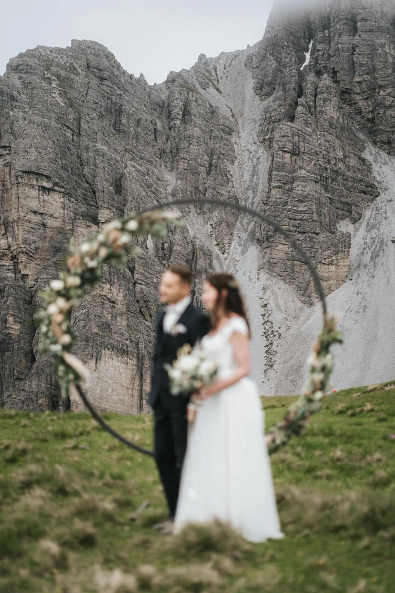
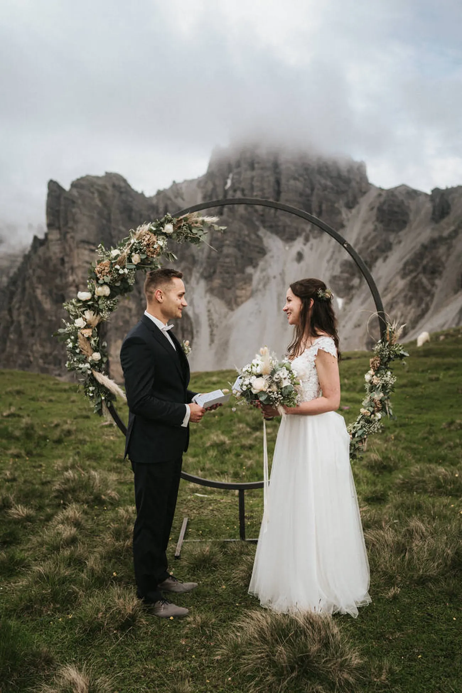

Un solo giorno, dall’inizio alla fine — la salita, la luce, il sereno scambio delle promesse e il lungo cammino di ritorno.
Ecco il loro mattino sopra le nuvole, esattamente come si è svolto.
Pianificazione Dolomites Wedding Planner · Film No Matter The Weather · Trucco Viki Aichner











